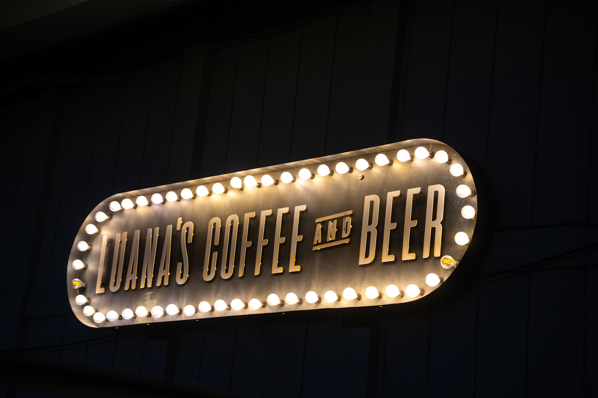

Luana's Coffee & Beer
-

-

-

-

-

- 
-

-

Hours
Monday: 7a-7p
Tuesday-Friday: 7a-10p
Address
1502 W Thomas Rd, Phoenix, AZ 85015
Phone
1-602-314-5557
Description
Luana’s Coffee and Beer is a small coffee shop, cafe, and bar located in north Phoenix between Thomas Road and 15th Ave. The cafe features a dark aesthetic with funky furniture, adult swim cartoons on TVs everywhere, and spooky Halloween-themed decorations.
There are seating options around the cafe, with tables, couches, comfort chairs, and a traditional bar area. The vibe of the cafe is cozy and comfortable. It feels like a place where people come to hang out, talk, study, work, or read.
The atmosphere is dark, cozy, and most reminiscent of a dive bar. There are unique, quirky decorations all around the cafe including on the walls, on shelves, and hanging from the ceiling.
The music is upbeat with an indie vibe, seemingly to reflect the crowd of mostly young and alternative people. This spot also offers some social events like bingo nights, and the late opening hours and ability to serve alcohol makes this a great place to meet like-minded young people, or be in a relaxing environment while doing work.
- Coffee:
- Lattes are very good; however, syrups can be a little overpowering.
- Food:
- There are tons of options for food here, and the kitchen doesn't close early like at some other places, making it a great place to catch a meal and a drink.
- Wifi:
- The wifi is free, available, and relatively easy to access. However, it was a little slow, spotty, and difficult to connect to at first. It works well overall, well enough to get work done.
- Seating:
- The seating that is available is awesome and very cozy. There's a lot of variety to choose from, between tables, couches, cushioned seats, and a bar area. However, on a crowded day, it can be difficult to find a place to sit. The seating arrangements also seem more group-oriented, with bigger tables.
- Atmosphere & Aesthetic:
- People come here to study, talk, hang out, drink, vibe. It's a very free-flowing place with a positive energy. The aesthetic is dark, artsy, moody, and new-age, and seems to draw inspiration from adult swim cartoons.
- Parking:
- In a city, finding a cafe with free, unlimited parking is difficult. This place had a small, easily accessible, free parking lot. Can’t ask for more than that.
- Bathroom:
- There are two single bathroom stalls. They are gender-neutral options with so much privacy and cool decorations, including a full-body-length mirror, disco ball, and past show posters. Bathrooms are fully stocked with soap, toilet paper, and paper towels. No bathroom code either, making the experience seamless and stress-free.
- Music:
- The music was upbeat with an energizing and indie vibe. The volume wasn't too loud or too quiet, making it easy to focus while enjoying the songs.
- Creativity:
- It's clear the owners care about decor and vibes because the amount of creativity and artistry that went into designing this place is outstanding. There are decorations in every corner, creating a cozy, personable, and exciting. The menu is in the form of a comic book, which is an awesome touch.
- Open Late:
- Yes
- Order Online:
- Yes
- Open Late:
- No